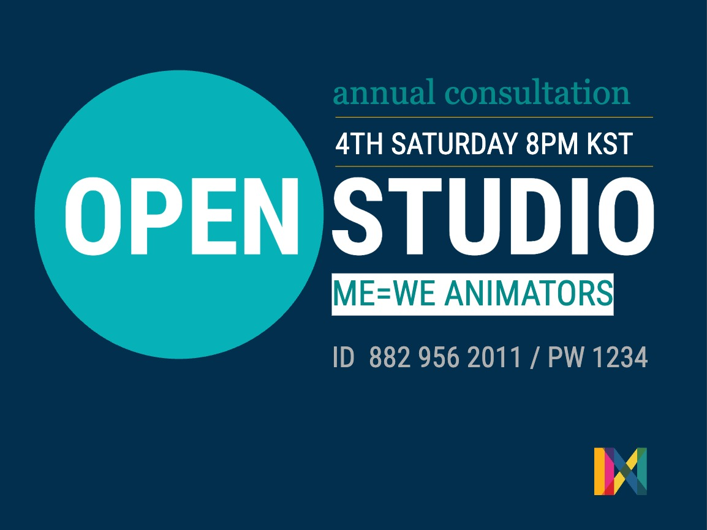
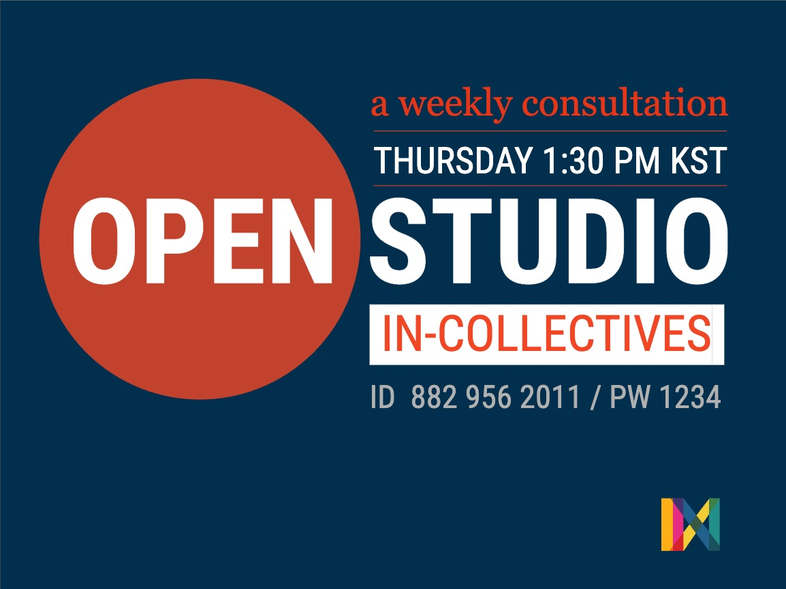
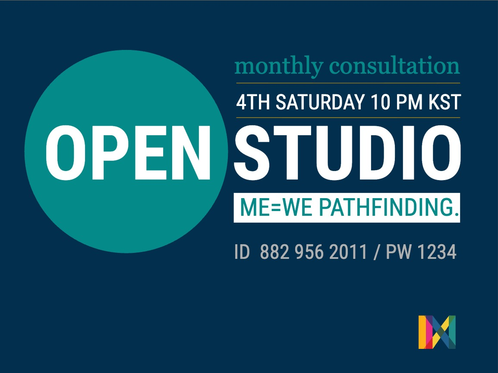
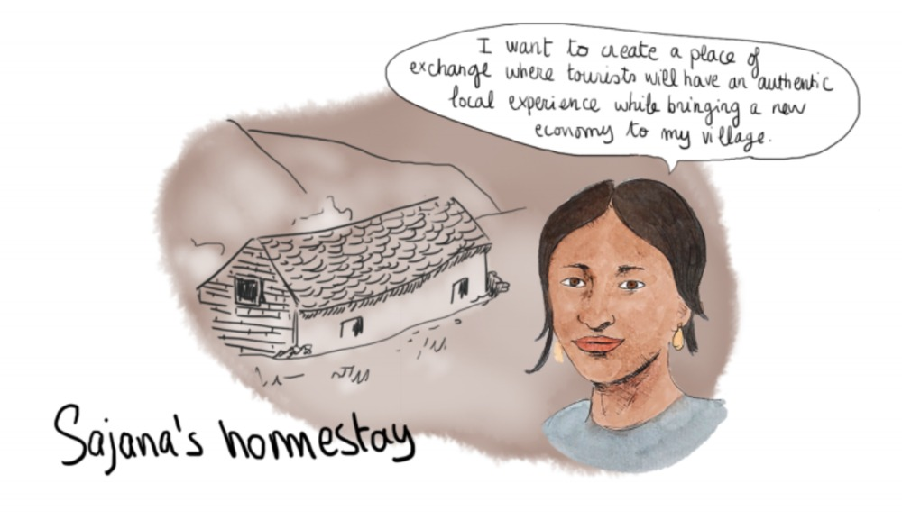

커뮤니티
온라인 · 곧 재개
MEWE 허브
뫼비우스 만들기를 마친 누구나 허브에 함께합니다 — 계속 함께 연습하는 온라인 공동체. 오픈 스튜디오를 통해 MEWE가 일상 속에서 어떻게 살아 있는지 나눕니다.
→어떤 워크숍은 끝납니다. 어떤 워크숍은 공동체가 됩니다 — 프로젝트가 끝난 뒤에도 계속 만나고, 연습하고, 지어 가는 사람들. 그들이 사는 곳이 여기입니다.
실천을 통해 만들어져 계속 연결되어 온 공동체들 — 온라인으로, 한 장소에 뿌리내려, 아직 모양을 찾아가는 중인 곳도 있습니다. 각각은 프로젝트가 아니라 사람들의 모임입니다.

뫼비우스 만들기를 마친 누구나 허브에 함께합니다 — 계속 함께 연습하는 온라인 공동체. 오픈 스튜디오를 통해 MEWE가 일상 속에서 어떻게 살아 있는지 나눕니다.
→
주니어 유스 그룹과 나란히 걷는 애니메이터들 — 진짜 우정을 쌓고 청소년들의 표현을 지지합니다. 우정이 깊어질수록 애니메이터들도 자신의 사각지대와 새로운 성장의 길을 발견합니다.
→
IN-콜렉티브들이 모여 각자의 여정과 MEWE 실천의 성장을 돌아봅니다 — 실제 프로젝트의 과제를 MEWE의 렌즈로 서로에게 묻고 답하면서.
→
패스파인더 퍼실리테이터 훈련을 마친 이들은 계속 자라나는 공동체에 합류해, 실천을 자신의 맥락으로 옮기고 다른 이들을 위한 공간을 엽니다.
→자신의 동네에서 작은 다리를 짓는 청년들. 아시아 익스체인지의 다섯 나라를 훌쩍 넘어 — 캐나다, 미국, 사우디아라비아, 인도까지. 시작하는 누구나 이곳에 속합니다.
→
1년의 MEWE 아시아 익스체인지를 살아가는 그룹 — 다섯 공동체가 각자의 자리에서 실천하며 함께 배웁니다. 자세한 내용은 아시아 익스체인지 프로젝트 페이지에.
→
푸드 레볼루션에서 자라났습니다. 농부, 영화감독, 자연학자, 연구자, 졸업생, 자원활동가로 이루어진 살아 있는 네트워크 — 지금은 조용하지만 여전히 연결되어 있습니다.
→
네팔과 UAE를 잇던 초기 청년 공동체. 지금은 활동하지 않지만 — 아카이브에 간직되어, 실천이 자라온 길의 일부로 남아 있습니다.
→
네트워크 곳곳에서 일어나는 일 — 모임, 축제, 랩, 이정표를 최신순으로. 모든 소식은 하나의 공동체로 거슬러 올라갑니다.
이웃들의 표현이 모인 살아 있는 컬렉션 — 모든 MEWE 스토리와 행동과 창작이 저마다의 빛점으로 모여, 혼자서는 만들 수 없는 모양을 이룹니다.